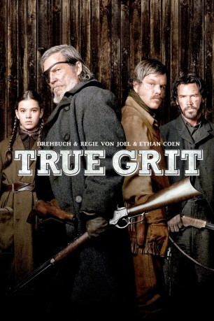
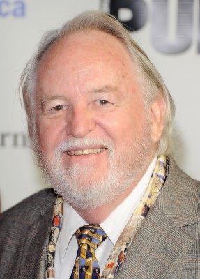
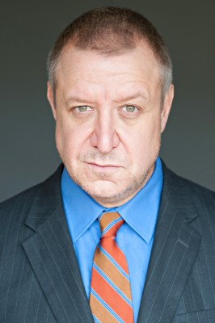
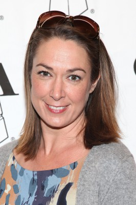
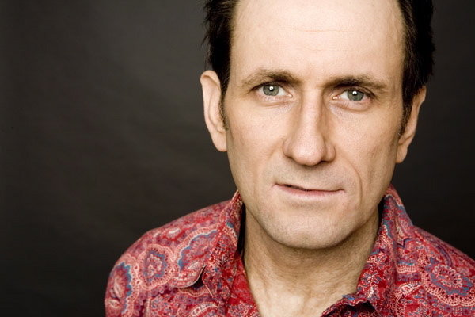

#561 True Grit - Vergeltung
Alternativ: True Grit
Auszeichnungen: für 10 Oscars nominiert 1 BAFTA-Awards gewonnen
 
 IMDB-Wertung: 7.6 / 10
IMDB-Wertung: 7.6 / 10  Metascore: 80
Metascore: 80 
Die 14jährige Mattie Ross ist fest entschlossen, den kaltblütigen Mord an ihrem Vater nicht ungesühnt zu lassen. Da die Behörden ihr nicht helfen, will sie den feigen Mörder Tom Chaney mit eigenen Mitteln seiner gerechten Strafe zuführen. Für 100 Dollar engagiert sie den trunksüchtigen und raubeinigen U.S. Marshall Rooster Cogburn, der es mit dem Gesetz selbst alles andere als genau nimmt. Widerwillig lässt er sich von Mattie überreden, sie auf die Jagd nach Chaney mit zu nehmen - quer durch die gesetzlosen Weiten der Prärie. Doch sie sind nicht allein, denn auch Texas Ranger LaBoeuf will den Flüchtigen stellen, um eine Kopfprämie zu kassieren, die auf Chaney wegen eines weiteren Mordes ausgesetzt ist. Unfreiwillig ziehen sie zu dritt weiter und schon bald kommt Mattie dem Mörder ihres Vaters gefährlich nah...
Jahr: 2010
Dauer: 110 Minuten
FSK: 12
Land: USA Studio: Paramount PicturesTonspuren: DD5.1 - ,
Untertitel:
Auflösung: 1080p (1920x1072) Größe: 7813 MB
Genre: Abenteuer, Drama, Western
Regisseur:  Ethan Coen,
Ethan Coen,  Joel Coen
Joel Coen
Drehbuch: Joel Coen, Ethan Coen, Charles Portis
Soundtrack: Carter Burwell
Darsteller:
 Jeff Bridges als Rooster Cogburn
Jeff Bridges als Rooster Cogburn Hailee Steinfeld als Mattie Ross
Hailee Steinfeld als Mattie Ross Matt Damon als LaBoeuf
Matt Damon als LaBoeuf Josh Brolin als Tom Chaney
Josh Brolin als Tom Chaney Barry Pepper als Lucky Ned Pepper
Barry Pepper als Lucky Ned Pepper-  Dakin Matthews als Col. Stonehill
-  Paul Rae als Emmett Quincy
 Domhnall Gleeson als Moon, The Kid
Domhnall Gleeson als Moon, The Kid-  Elizabeth Marvel als 40-Year-Old Mattie
- Ed Corbin als Bear Man
 Leon Russom als Sheriff
Leon Russom als Sheriff- Bruce Green als Harold Parmalee
- Candyce Hinkle als Boarding House Landlady
 Joe Stevens als Cross-examining Lawyer
Joe Stevens als Cross-examining Lawyer- Nicholas Sadler als Repentant Condemned Man
-  Scott Sowers als Unrepentant Condemned Man
- Jonathan Joss als Condemned Indian
- Mary Anzalone als Traveling Lady , uncredited
- Joseph Blackstone als Citizen , uncredited
 Brian Brown als Coke Hays , uncredited
Brian Brown als Coke Hays , uncredited- Wendy Crouse als Town Lady , uncredited
 Ted Ferguson als Hanging Witness , uncredited
Ted Ferguson als Hanging Witness , uncredited- Martina Griffin als Wild West Show Indian , uncredited
- Beau Harris als Smoker , uncredited
- Cody Jones als Indian in Wild West Show , uncredited
 R.C. Keene als Spectator at hanging , uncredited
R.C. Keene als Spectator at hanging , uncredited- Scott Mason als Boarder , uncredited
- Nic Quardero als Hanging Witness , uncredited
 J.K. Simmons als J. Noble Daggett , uncredited
J.K. Simmons als J. Noble Daggett , uncredited- Jarlath Conroy als Undertaker
- Roy Lee Jones als Yarnell
- Peter Leung als Mr. Lee
- Don Pirl als Cole Younger
- David Lipman als First Lawyer
- Jake Walker als Judge Parker
- Orlando Storm Smart als Stableboy
- Ty Mitchell als Ferryman
- Maggie A. Goodman als Woman at Hanging
- Brandon Sanderson als Indian Youth at Bagby's
- Ruben Nakai Campana als Indian Youth at Bagby's
- Andy Andersen als Horseman , uncredited
- Gopal Bidari als Ethnic Jury Member , uncredited
- Alan Eaglewolf Bryant als Indian #6 in Wild West Show , uncredited
- Craig Denham als Wild West Show Worker , uncredited
- Scott Flick als Clement Parmalee , uncredited
 Samantha Inoue Harte als Horserider , uncredited
Samantha Inoue Harte als Horserider , uncredited- Benny James als Dead Body , uncredited
- Vivian Kalinov als Frontier Woman , uncredited
- John Michael Measells als Wild West Hand , uncredited
- Joe Nelson als Hanging Witness , uncredited
Datei: X:\HD-Western-2000-2015\True Grit - Vergeltung (2010, FSK12, 1920x1072).mkv seit 09.03.2015
Festplatte: HD Eastern+Western
 Es gibt insgesamt 61 Filme in der Gruppe 'HD-Western-2000-2015'
Es gibt insgesamt 61 Filme in der Gruppe 'HD-Western-2000-2015'